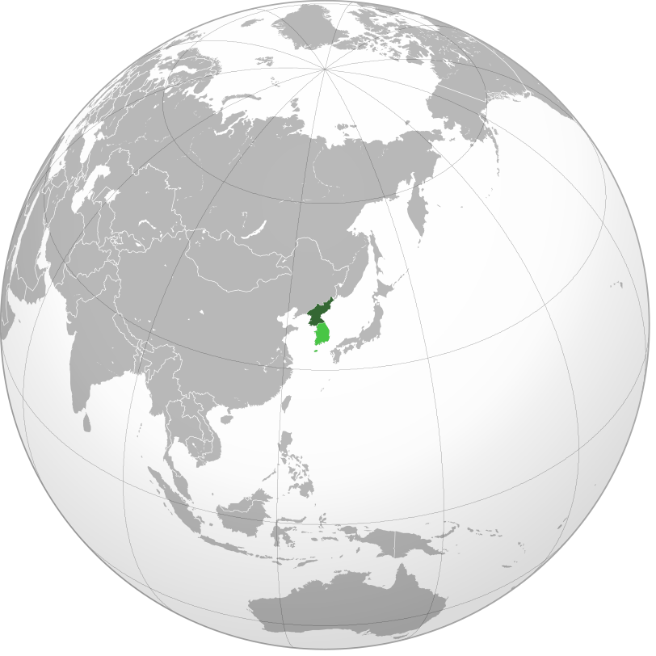
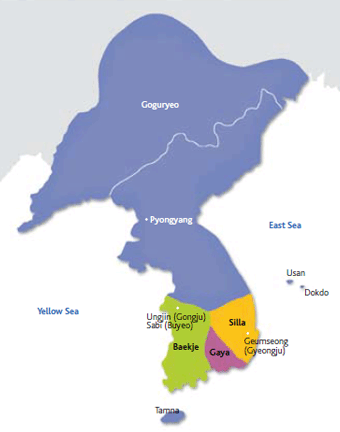
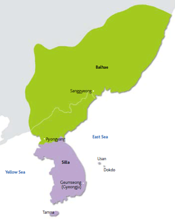

Coreia do Norte

Silla unificado e Balhae (Século VIII) 4
Dinâmica de Formação da Coreia no Século XX 6
Ocupação japonesa e movimento de independência 6
Coreia no final da Segunda Guerra Mundial 6
Tensões entre Estados Unidos e Coreia do Norte 8
Relações entre Coreia do Sul e Coreia do Norte 8
Tensão entre Coreia do Norte e Japão 8
Luta de classes e o papel do partido 9
Antiimperialismo e autossuficiência 10
Relações com o marxismo-leninismo 10
Por que a Coreia do Norte está aumentando a tensão com seus vizinhos 16
O que Kim Jong-un está aprontando? 16

A Coreia é um território localizado na Península da Coreia, esta península fica na região nordeste da ásia e possui fronteiras com a China a noroeste, com a Rússia a nordeste e é separada do Japão a leste pelo Estreito da Coreia e pelo Mar da China Oriental. Atualmente, a Coreia é dividida entre dois países, a Coreia do Norte, oficialmente República Popular Democrática da Coreia (RPDC), e Coreia do Sul, oficialmente República da Coreia (ROCK).[n]
.svg&sa=D&source=editors&ust=1675427023489198&usg=AOvVaw1xpCRdpH69TCBkzl5tqoG-){kind=link}
Dinâmica de Formação da Coreia no Século XX[o]
Ocupação japonesa e movimento de independência
No século XIX, a Coreia permaneceu contrária às relações diplomáticas com países ocidentais. Com isso, alguns PAíSES IMPERIALISTAS PASSARAM A COMPETIR ENTRE SI PELA INFLUêNCIA SOBRE A PENíNSULA. Em 1910, o Japão, um dos países imperialistas, anexou a Coreia depois de sair vencedor dos conflitos contra a China e a Rússia.
O processo de colonização despertou o sentimento de PATRIOTISMO NOS COREANOS. Em 1919, manifestantes em todo o país EXIGIRAM A INDEPENDêNCIA, no entanto, foram reprimidos de forma brutal pelas autoridades japonesas.
Apesar de o movimento ter FRACASSADO, o patriotismo permaneceu nos coreanos, o que levou à criação de um Governo Provisório em Xangai, na China, e a outros conflitos armados contra os japoneses.
Com a exploração econômica do país, durante o período de colonização, a vida dos coreanos arruinou-se e permaneceu nesta situação até o fim da Segunda Guerra Mundial, em 1945.
Coreia no final da Segunda Guerra Mundial
Com o fim da Segunda Guerra Mundial, a Coreia foi libertada da ocupação japonesa. Os coreanos, que já haviam lutado muito por isso, se alegraram, porém, a luta para estabelecer um país independente mostrou seu fracasso quando a parte sul da península foi ocupada pelas forças americanas e a parte norte foi controlada pelas tropas soviéticas. Isso GEROU UM PAíS DIVIDIDO em duas ideologias totalmente diferentes, devido à Guerra Fria.
Em 1947 a Assembleia Geral das Nações Unidas decidiu que uma eleição deveria acontecer na Coreia. Entretanto, tal decisão não foi aceita pela URSS, que não concedeu o acesso à parte norte da península.
Foi decidido então que as eleições iriam ser realizadas em áreas acessíveis à comissão. Com isso, as eleições iniciais ocorreram em maio de 1948 nas regiões sul do paralelo 38, linha que passou a dividir a Península Coreana em Norte e Sul. Em 1948, Syngman Rhee foi eleito como primeiro presidente da República da Coreia, ele era um intelectual educado nos EUA e havia combatido pela independência anteriormente. Sua visão voltada para a democracia e para a economia de mercado foi crucial na constituição de um governo na Coreia do Sul. Paralelo a isso, Kim Il-sung assumiu a liderança de um regime comunista que se estabeleceu a norte do paralelo 38, com a influência e apoio da União Soviética.
Guerra das Coreias
Devido ao mútuo interesse em domínio total sobre o território, uma tensão muito forte se estabeleceu entre os novos países. Neste contexto, em 1949 a Coreia do Norte havia tentado invadir o sul da península, no entanto, o líder soviético Stalin achava que as forças norte-coreanas não estavam preparadas para o confronto, por isso ele recusou essa investida.
Um ano depois, o exército norte-coreano já estava em vantagens contra o exército da Coreia do Sul, pois contava com o apoio armamentístico da União Soviética e com apoio militar da China. Dessa forma, com a aprovação de Stalin, em 5 de junho de 1950, a Coreia do Norte, de forma inesperada, atravessou o paralelo 38 e invadiu o território da Coreia do Sul, no intuito de restabelecer uma Coreia unificada.
Com medo de que o comunismo se alastrasse por todo mundo, o presidente dos EUA, Harry Truman, defendeu que o líder do bloco capitalista deveria interferir no conflito entre as Coreias. Com isso, os EUA enviou tropas americanas para apoiar a Coreia do Sul. Além disso, Truman também buscou ajuda militar da ONU. Na resolução 82 do Conselho de Segurança das Nações Unidas, a organização além de afirmar que o governo da Coreia do Sul era o único governo deste tipo na península, pois foi determinado legitimamente através de eleições, exigiu que as forças norte-coreanas regressassem para o paralelo 38, para que a guerra chegasse ao fim.
Com isso, em setembro de 1950, a ONU enviou tropas em auxílio à Coreia do Sul, para controlar a invasão norte-coreana. Em outubro do mesmo ano, a China também enviou suas tropas para ajudar a Coreia do Norte, pois não queria uma fronteira de influência estadunidense.
Consequências
Os dois países tiveram muitas consequências causadas pelo conflito, como o grande número de mortos, estimado em mais de 5 milhões de pessoas, e uma zona desmilitarizada de 5 km de largura criada durante a guerra.
Desde o fim da guerra, uma tensão se estabeleceu entre os dois países. A Coreia do Sul, que ainda manteve mais de 20 mil soldados americanos na zona desmilitarizada, tornou- se uma potência tecnológica e econômica. Enquanto a Coreia do Norte, tornou-se um dos países mais fechados do mundo.
Após a Guerra Fria
Em 1980, depois do fim da URSS, um dos seus principais aliados, a Coreia do Norte iniciou o desenvolvimento de armas nucleares, para que a dinastia Kim fosse protegida.
O país assinou o Acordo de Não-Proliferação Nuclear (TNP) em 1985, no mesmo ano em que concluiu a construção de um reator nuclear experimental. O acordo permitia que países como a Coreia do Norte, que não tinham armas nucleares antes de 1967, pudessem utilizar a tecnologia apenas para fins pacíficos.
Em 2003, o país saiu do TNP. A partir disso, as organizações internacionais buscaram negociações com a Coreia do Norte, para que armas nucleares não fossem desenvolvidas e a pesquisa nuclear fosse usada apenas para fins pacíficos.
Tensões entre Estados Unidos e Coreia do Norte
A relação entre EUA e a Coreia do Norte é bastante complexa, envolve muitas tentativas de negociação, divergências e muitos interesses. Além disso, a tensão entre os dois países é constante. Isso acontece porque os EUA possui fortes aliados, como Japão e Coreia do Sul, que fazem fronteira com a Coreia do Norte e que são muitas vezes alvos de testes militares do governo norte coreano. Com isso, o país americano, em busca de dar auxílio aos seus aliados, mantêm bases militares na região, o que faz com que a Coreia do Norte se sinta ameaçada e responda com mais testes militares.
Com o governo Trump, as tensões entre os dois países aumentaram, já que a Coreia do Norte tem tido sucesso nos testes de mísseis balísticos de longo alcance e dos avanços na tecnologia de bombas de hidrogênio.
Relações entre Coreia do Sul e Coreia do Norte
A relação entre as Coreias não é muito consistente e amigável, apesar disso, os dois líderes dos países se encontraram em 2018, na zona desmilitarizada com a ajuda dos Estados Unidos. Durante a reunião, os dois líderes afirmam seu compromisso com “uma nova era de paz”.[p][q]
Tensão entre Coreia do Norte e Japão
Na manhã do dia 3/11 de 2022 toda a população japonesa ficou em alerta, pois um míssil havia sido lançado pela Coreia do Norte na direção do Japão. O projétil acabou falhando e caindo no mar, sem atingir território japonês, mas tal ação do governo Norte Coreano causou repercussão por não ser um comportamento natural e ser altamente perigoso e provocativo.
Essa atitude do presidente Norte Coreano, foi interpretada por muitos estudiosos como uma forma de aumentar as tensões entre os países vizinhos (e inimigos históricos) com objetivos armamentistas e políticos. Entretanto, essas ameaças também são direcionadas para os EUA, além da Coreia do Sul e Japão, pois trata-se de um míssil balístico intercontinental com capacidade nuclear, os chamados ICBM.
Contudo, toda essa provocação ao Japão pode surtir um efeito oposto ao esperado, pois depois de muito tempo adotando medidas pacifistas, é provável que o governo Japonês aumente significativamente o orçamento direcionado a compra de armas de defesa, de ataque de longa distância e de armamento em geral.
Notícias
Na Coreia do Norte, Kim Jong-un inicia 2018 com ameaças aos EUA
'Botão nuclear está na minha mesa', disse ele. Japoneses começam o ano indo a templos; em Hong Kong festa da virada foi grandiosa.
Coreia do Norte faz novo lançamento de míssil, diz Coreia do Sul
Japão afirma que ação é uma ameaça à comunidade internacional.
Coreia do Norte lança mísseis balísticos
Exército sul-coreano condenou disparos como 'extremamente inapropriados, dada a situação difícil que o mundo está enfrentando devido à Covid-19'
Por que a Coreia do Norte cortou todas as comunicações com o Sul
Panfletos de propaganda lançados em balões por asilados na Coreia do Sul formaram o pretexto para Pyongyang pressionar Seul ainda mais
Coreia do Norte ameaça EUA com programa nuclear após fim de negociações
'Nunca mais daremos ao mandatário americano outro pacote para ser usado para somar conquistas sem receber nada em troca', disse ...
Coreia do Norte explode escritório de relações com o sul: veja vídeo
Aumento da tensão na fronteira entre os dois países é decorrente da interrupção das conversas promovida pelo regime ditatorial de K...
Coreia do Norte ameaça reforçar segurança em zona desmilitarizada
Exercícios militares ordenados por Pyongyang estão programados em diversas regiões do país; Sul condena declarações e diz que Kim Jong...
Coreia do Norte dispara dois mísseis no Mar do Japão
Provocação aumenta pressão sobre governo de Joe Biden; Tóquio definiu exercício militar como 'uma ameaça para a paz e a segurança da região'
Coreias do Norte e do Sul testam mísseis e elevam tensão na região
Governo sul-coreano lançou míssil balístico debaixo d'água cerca de três horas depois de teste norte-coreano com projéteis de curto a...
Coreia do Norte e do Sul concordam sobre o fim formal da guerra
A Guerra da Coreia teve fim em 1953 com um armistício e não um tratado de paz, o que significa que, em teoria, os dois países ainda estã...
Biden viaja à Coreia do Sul diante de ameaça nuclear da Coreia do Norte
Depois de Seul, onde tratará sobretudo de questões de segurança, presidente americano segue para o Japão
Coreia do Sul e EUA lançam oito mísseis em resposta à Coreia do Norte
Presidentes Yoon Suk-yeol e Joe Biden prometeram adotar linha dura contra Pyongyang após 'séria provocação que prejudica a paz e a...
Kim Jong-un ameaça usar armas nucleares contra EUA e Coreia do Sul
Em meio à crise econômica, o líder norte-coreano intensifica a retórica bélica para angariar apoio popular
Coreia do Norte: testes de mísseis simulam ataque com armas nucleares
Pyongyang disse estar 'completamente pronta para atingir e destruir alvos a qualquer momento e em qualquer local'
Considerações Finais
Com o fim da Segunda Guerra Mundial, a Coreia se viu sob o controle das duas principais potências no contexto político mundial da época: Estados Unidos e União Soviética, o que fez com que o país continuasse sem poder para tomar as próprias decisões. A ocupação dessas potências fez com que o país se dividisse em dois e fosse marcado profundamente por suas ideologias. As marcas desse domínio foram responsáveis pelo início do primeiro conflito armado da Guerra Fria: a Guerra das Coreias.
Neste contexto, nota-se que os interesses das superpotências foram os responsáveis por fomentar a rivalidade ideológica e política entre esses países, que gerou a Guerra e que trouxe duras consequências para ambas nações, como o grande número de mortos e a alta tensão entre eles, que permanece até os dias de hoje. Dessa forma, interesses totalmente alheios aos da Coreia fez com que esse país fosse transformado fortemente. [r][s][t][u][v][w][x][y][z]
História da Coreia (antes do século XIX)
Gojoseon
A história da península coreana é muito longa, pois começou há 700.000 anos, quando a região passou a ser habitada. Em todo o território, é possível encontrar relíquias do período Neolítico, que teve início há 8.000 anos.
Na Era do Bronze, que teve início cerca de 1.500-2.000 a.C., muitas tribos surgiram na Manchúria e no noroeste da Coreia, posteriormente, elas foram unidas por Dungun, - fundador do povo coreano - instituindo Joseon (2333 a.C.).
3 Reinos e Gaya (Século V)
No século V, as cidades-estados da região foram se unificando gradativamente em ligas tribais, e depois, em reinos. Goguryeo (37 a.C. – 668 d.C.), localizada ao longo do meio do Rio Yalu, foi uma das primeiras ligas tribais a se transformar em reino. Este reino, abrangia uma grande área na Manchúria e na Península e, posteriormente, adotou uma estrutura política semelhante à de um império.
Além de Goguryeo, havia outros reinos formados: Baekje (18 a.C. -- 660 d.C.), que foi transformado em um estado centralizado durante o reinado de Geunchogo (r. 346 – 375); Silla (57 a.C. – 935 d.C.), com menor desenvolvimento e menor influência chinesa e Gaya (45-562) formado pela união de várias tribos.

Silla unificado e Balhae (Século VIII)
No século VIII, após dominar todas as cidades-estados vizinhas, inclusive Goguryeo, Gaya e Baekje, o Reino de Silla atingiu o auge do seu poder e prosperidade. No mesmo século, os refugiados de Goguryeo estabeleceram o Reino de Balhae, que se localizava no sul da Manchúria. Este novo reino adotou as práticas administrativas e culturais características de Goguryeo, apesar de ser composto por outras populações. Balhae ocupou um território extenso no auge da sua prosperidade (no século IX), estabeleceu relações com Japão e Turquia e sobreviveu até o ano 926.

Dinastia Goryeo (século XI)
No século XI, o general Wang Geon fundou a dinastia Goryeo (918-1392), de onde deriva o nome inglês “Korea”. Apesar da Dinastia Goryeo não ter conseguido recuperar as terras perdidas do Reino de Goguryeo, no nordeste da China, tinha uma cultura sofisticada representada pelo céladon. Durante esta dinastia, algumas inovações surgiram, como a primeira prensa móvel.

Dinastia Joseon (século XV)
Em 1392, no século XV, o General Yi Song-gye derrubou Goryeo e instituiu Joseon, uma nova dinastia. Seus governantes utilizaram um sistema político bastante estável para administrá-la.
Em 1592, a região foi invadida pelo Japão e, como líder de ataque contra os japoneses, o Almirante Yi Sun-shin se destacou, pois havia inventado o geobukseon (navio tartaruga), o primeiro couraçado de ferro no mundo.
No reinado do Rei Yeongjo (r. 1724-1776), diante de uma instabilidade política indesejável, uma política de imparcialidade na nomeação dos governantes foi adotada, essa política fortaleceu o reino e trouxe, novamente, a estabilidade política.[aa]
Juche
Juche, conceito que teve origem em um discurso de Kim Il-sung em 28 de dezembro de 1955, é o sistema político em que se baseia a República Popular Democrática da Coreia. Também considerada uma ideologia, o Juche foi inspirado no socialismo, no marxismo-leninismo, no patriotismo e na ideia de independência.
O termo significa “corrente principal” ou “autossuficiência” e está relacionado à ideia de Kim Il-sung ver as massas coreanas como os arquitetos do desenvolvimento nacional do país.
Essa ideologia é o fundamento de toda a estrutura política norte-coreana, como a busca pela independência dos outros países, um grande poder militar e a utilização preferencial dos produtos nacionais.
Antropocentrismo
O Juche impõe o homem como um ser superior no mundo: por ser "o ser material mais desenvolvido", ele é capaz de dobrar a natureza à sua vontade e é de fato "o objeto do trabalho do homem e também o material fonte de sua vida "
Com essa posição do homem, faz se necessário três características principais: a independência, a criatividade e a consciência, qualidades que estão interligadas e, de alguma forma, são interdependentes. Contudo, tudo isso deve ser desenvolvido ao longo da vida social do homem, e não é dado diretamente pela natureza.
Sociedade
O governo norte-coreano busca separar a população em três classes igualmente importantes: camponeses, trabalhadores e samu-won(intelectuais e trabalhadores profissionais).
Há também no país uma preocupação em aumentar a educação e a alfabetização, devido à ideia de Lenin de que sem educação os trabalhadores não conseguem realizar uma luta política bem como à necessidade de profissionais mais qualificados para o desenvolvimento econômico.
Luta de classes e o papel do partido
Conforme Juche, a história foi construída por meio dos esforços e lutas das classes trabalhadoras. Dessa forma, essas classes são a parte ativa de toda a história, pois elas fazem revolução, constroem o próprio destino e mudam o mundo. Entretanto, as classes exploradoras foram responsáveis por tentar destruir o processo histórico, com isso, a função dos trabalhadores é lutar contra os “reacionários da história" e instituir o socialismo.
Neste contexto, as classes operárias são governadas pelo partido da classe (na Coréia do Norte, o Partido do Trabalho da Coréia ) e o líder conduz as massas para aplicarem o socialismo e, por fim, o comunismo.
Antiimperialismo e autossuficiência
Para Juche, a luta pela independência se traduz na luta pelo socialismo e comunismo, tendo em vista que põe fim em todo tipo de exploração do homem, opressão das classes e prevalência de superpotências. Contudo, se o que se encontra à frente são as forças reacionárias, não é possível buscar uma autêntica emancipação das massas populares. Por isso, o Juche é o objetivo máximo da criação do comunismo.
Princípios orientadores
Os princípios orientadores são os meios que o PLC deve seguir para executar as regras do Juche em seu exercício político:
Assegurar a independência, com Juche como método de pensamento, estimulando o sentimento patriótico, instaurando um governo popular com auto-suficiência econômica por meio do desenvolvimento científico e tecnológico bem como o uso adequado dos recursos nacionais e a consolidação do Exército do Povo Coreano .
Utilizar o método criativo, com ajuda das massas, atendendo ao povo para desenvolver nele o desejo de fortalecer a ideologia. Neste sentido, o partido deve conter outras ideologias, e sempre analisar a realidade para aplicar mudanças.
Priorizar a ideologia, buscando converter as pessoas em comunistas fiéis a Juche e ao partido, isso porque para alcançar o socialismo é necessário da ajuda popular.
Relações com o marxismo-leninismo
Apesar de Kim Il-sung apoiar, ele considerava que o marxismo-leninismo não deveria ser apenas copiado, sem uma adaptação à realidade. Portanto, ele defendia que essa ideologia deveria ser um guia para as ações e que deveria ser reformulada e adaptada ao local em que ia ser aplicada. Contudo, em 1992, com o declínio dos regimes socialistas, o Juche passou a ser destacado e todas as referências ao marxismo-leninismo foram retiradas tanto da constituição como de alguns prédios do governo.
Diferenças
Dentre os ideais do marxismo-leninismo, Juche defende o princípio da luta de classes, a revolução operária, o anti-capitalismo e a crítica à construção liberal dos direitos humanos, pois, para o PCL, a “proteção dos direitos humanos” é um ideal anti-revolucionário, desenvolvido por países imperialistas que não garantem os direitos fundamentais e a democracia.
A ideologia Juche se diferencia do marxismo-leninismo em alguns pontos, como a existência de um líder que provém bem-estar e segurança para todos, a importância do comércio para a elevação da qualidade de vida e alguns aspectos nacionalistas.
Ao contrário do marxismo-leninismo, que propõem uma ditadura temporária, o Juche propõe a criação de um governo fiel ao líder supremo. Este líder tem o dever de conduzir as classes e de ser o único representante delas. Além disso, ele é considerado um humano perfeito e incorruptível. E, para que a política do líder funcione, um sistema ideológico unitário deve ser estabelecido.
Diplomacia
Segundo Kim Jong-il, a independência fortalece o internacionalismo, e, neste sentido, a Coreia do Norte colaborou com outros países socialistas com base na ideia do benefício mútuo.
Economia
Kim Jong-il defendeu uma economia auto-suficiente e com bases fortes, além de uma cooperação econômica internacional. Com isso, devido aos intensos investimentos na indústria pesada, o país conseguiu se tornar a “economia industrial mais auto suficiente do mundo”.
Kim Jong-il defendeu uma economia auto-suficiente e com bases fortes, além de uma cooperação econômica internacional. Com isso, devido aos intensos investimentos na indústria pesada, o país conseguiu se tornar a “economia industrial mais auto suficiente do mundo”.
Defesa
Para Kim Jong-il a defesa autossuficiente é algo essencial para a soberania de um país independente, pois o país está armado ele se torna uma fortaleza. Neste sentido, o governo tem investido na indústria armamentista do país, com intuito de acabar com a dependência bélica de outros Estados. Além disso, as Forças Armadas da Coreia do Norte são uma das maiores do mundo.
Culto político
Apesar de ser uma ideologia totalmente contra a prática de religiões, principalmente as tradicionais, muitos estudiosos observam aspectos em Juche que se assemelha a uma religião, devido à presença de um líder, de rituais e familismo.
Culto de personalidade
A ideologia Juche tem como característica o antropocentrismo, em que o homem está no centro das coisas e é responsável pelo seu próprio destino. Contudo, o regime na Coreia do Norte possui um líder superior às massas, pois, com a submissão popular, é possível aplicar o sistema político baseado no Juche.
Sendo assim, através da crença no papel essencial do líder, Kim Il-sung se tornou a "divindade suprema para o povo" e a doutrina Juche é fortalecida na constituição da Coréia do Norte como o princípio orientador do país.
Familismo
Na Coreia do Norte, o Líder é visto como um grande pai para a nação e os cidadãos norte-coreanos, como seus filhos. Contudo, quando o filho de Kim Il-sung assumiu cargos importantes de poder no país, o que antes era um culto à personalidade se tornou um culto familiar e toda a família do líder passou a ser cultuada pela população.
Calendário
O calendário utilizado pelos norte-coreanos é uma variação do calendário gregoriano, ele propõe que o ano 1 comece no ano em que Kim Il-sung nasceu, ou seja em 1912.[ab][ac][ad]
Fontes
https://omegawebhosting.net/wiki/Juche - Juche
https://omegawebhosting.net/wiki/Costituzione_nordcoreana -Constituição
https://pt.wikipedia.org/wiki/Coreia - Guerras e história
https://www.politize.com.br/guerra-da-coreia/ -Guerra da Coreia
https://www.gazetadopovo.com.br/opiniao/artigos/eua-coreia-do-norte-tensao-armas-nucleares/- Tensão entre Coreia do Norte e Estados Unidos
https://g1.globo.com/jornal-nacional/noticia/2018/01/na-coreia-do-norte-kim-jong-un-inicia-2018-com-ameacas-aos-eua.html -noticia 2018
https://g1.globo.com/mundo/noticia/2019/11/28/coreia-do-norte-faz-novo-lancamento-de-missil.ghtml - noticia 2019
https://veja.abril.com.br/mundo/coreia-do-norte-lanca-misseis-balisticos/ - noticia 2020
https://veja.abril.com.br/mundo/por-que-a-coreia-do-norte-cortou-todas-as-comunicacoes-com-o-sul/ - noticia2 2020
https://veja.abril.com.br/mundo/coreia-do-norte-explode-escritorio-de-relacoes-com-o-sul/ - noticia 4 2020
https://veja.abril.com.br/mundo/coreia-do-norte-ameaca-reforcar-seguranca-em-zona-desmilitarizada/ -noticia 5 2020
https://veja.abril.com.br/mundo/coreia-do-norte-dispara-dois-misseis-no-mar-do-japao/ - noticia 2021
https://veja.abril.com.br/mundo/coreias-do-norte-e-do-sul-testam-misseis-e-elevam-tensao-na-regiao/ noticia 2 2021
https://veja.abril.com.br/mundo/coreia-do-norte-e-do-sul-concordam-sobre-o-fim-formal-da-guerra/ noticia 3 2021
https://veja.abril.com.br/mundo/biden-viaja-a-coreia-do-sul-diante-de-ameaca-nuclear-da-coreia-do-norte/ noticia 2022
https://veja.abril.com.br/mundo/coreia-do-sul-e-eua-lancam-oito-misseis-em-resposta-a-coreia-do-norte/ noticia 2 2022
https://veja.abril.com.br/mundo/kim-jong-un-ameaca-usar-armas-nucleares-contra-eua-e-coreia-do-sul/ noticia 3 2022
https://veja.abril.com.br/mundo/coreia-do-norte-testes-de-misseis-simulam-ataque-com-armas-nucleares/ - noticia 4 2022